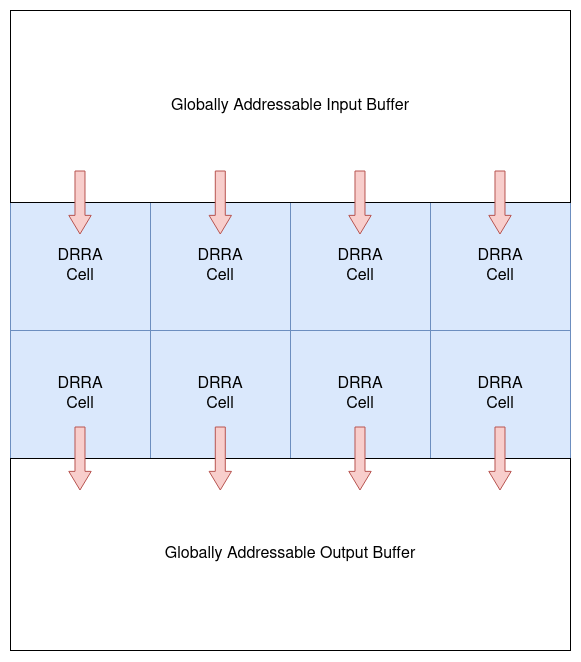

DRRA-based AlImp Design Tutorial (v3)
Note
This page is written for vesyla-suite version 3. For vesyla-suite version 2, please see DRRA-based AlImp Design Tutorial v3.
Introduction
Programming Model
Each algorithm compiled by vesyla-suite will be mapped to a DRRA fabric. The DRRA fabric has a globally addressable input buffer and a globally addressable output buffer, as shown in the following figure.

The input buffer is used to store the input data of the algorithm. The output buffer is used to store the output data of the algorithm. The input buffer and the output buffer are connected to the DRRA fabric through the input and output ports of the fabric. The input and output ports are used to connect the DRRA fabric to the outside world.
Currently, we assume that all DRRA cells have access to both input and output buffer. This assumption might be modified in the future when introducing SiLago 2 DRRA fabric. The input bandwidth and output bandwith are determined by the number of columns of the DRRA fabric.
Right now, we don't support scratch-pad memory implemented by DiMArch rows. This will change when migrating to SiLago 2 DRRA fabric.
The assumption of giant globally addressable memory buffers is not realistic. However, these buffers will not be implemented as it is. Instead, application-level synthesis (ALS) tool will synthesize the input and output buffers to the actual hardware. The input and output buffers are used to simplify the algorithmic compilation process.
Initialization
In any directory, you can initialize a vesyla-suite project by using the command:
vs-init -s vs-vesyla
If this directory has already been initialized, you can force the re-initialization by using the command:
vs-init -f -s vs-vesyla
You will notice that several files has been created in this directory. One of the files is config.json. This file contains the configuration of the vesyla-suite project. You can modify this file to change the configuration of the project. The configuration file is described in the following section.
Another file you need to modify is main.cpp.jinja2. This file is a template file used to generate the main.cpp file. You need to define some of the functions in this file. The functions are described in the following section.
Implementation
We use a simple example to demonstrate the implementation of algorithms. The example is a element-wise addition of two vectors. It has two inputs: vector A and vector B. It has one output: vector C. All of them have size equal to 16. The element-wise addition is defined as: C[i] = A[i] + B[i].
We first define the hardware architecture in config.json.
{
"ARCH_DRRA_ROW": 1,
"ARCH_DRRA_COL": 1,
"ARCH_SRAM_ROW": 0,
"ARCH_SRAM_COL": 0,
"ARCH_SRAM_DEPTH": 64,
"ARCH_SRAM_WIDTH": 256,
"ARCH_RF_DEPTH": 64,
"ARCH_RF_WIDTH": 16,
"ARCH_IO_DEPTH": 1024,
"ARCH_IO_WIDTH": 256,
"ARCH_IRAM_DEPTH": 64
}
ARCH_DRRA_ROW and ARCH_DRRA_COL are the number of rows and columns of the DRRA fabric. ARCH_SRAM_ROW and ARCH_SRAM_COL are the number of rows and columns of the SRAM array used as scratch-pad memory. ARCH_SRAM_DEPTH is the depth of each SRAM cell. ARCH_SRAM_WIDTH is the width of each SRAM cell in terms of bits. In this example, we will not use any SRAM cell. ARCH_RF_DEPTH is the depth of each register file. ARCH_RF_WIDTH is the width of each register file in terms of bits. ARCH_IO_DEPTH is the depth of each input and output buffer. ARCH_IO_WIDTH is the width of each input and output buffer in terms of bits. ARCH_IRAM_DEPTH is the depth of the instruction RAM in each DRRA cell.
Before we implement the algorithm in main.cpp.jinja2, we need to define the input and output data layout in input and output buffer. Both input and output buffer has width that equals to 256 bits. So, each row can be divided by 16 16-bit chunks, each of which stores an element of A, B, or C. The layout is described by the following table.
Input Buffer:
+------+-----+-----+-----+-----+-----+-----+-----+-----+-----+-----+-----+-----+-----+-----+-----+-----+
| addr | CHK0| CHK1| CHK2| CHK3| CHK4| CHK5| CHK6| CHK7| CHK8| CHK9|CHK10|CHK11|CHK12|CHK13|CHK14|CHK15|
+------+-----+-----+-----+-----+-----+-----+-----+-----+-----+-----+-----+-----+-----+-----+-----+-----+
| 0 | A[0]| A[1]| A[2]| A[3]| A[4]| A[5]| A[6]| A[7]| A[8]| A[9]|A[10]|A[11]|A[12]|A[13]|A[14]|A[15]|
| 1 | B[0]| B[1]| B[2]| B[3]| B[4]| B[5]| B[6]| B[7]| B[8]| B[9]|B[10]|B[11]|B[12]|B[13]|B[14]|B[15]|
+------+-----+-----+-----+-----+-----+-----+-----+-----+-----+-----+-----+-----+-----+-----+-----+-----+
Output Buffer:
+------+-----+-----+-----+-----+-----+-----+-----+-----+-----+-----+-----+-----+-----+-----+-----+-----+
| addr | CHK0| CHK1| CHK2| CHK3| CHK4| CHK5| CHK6| CHK7| CHK8| CHK9|CHK10|CHK11|CHK12|CHK13|CHK14|CHK15|
+------+-----+-----+-----+-----+-----+-----+-----+-----+-----+-----+-----+-----+-----+-----+-----+-----+
| 0 | C[0]| C[1]| C[2]| C[3]| C[4]| C[5]| C[6]| C[7]| C[8]| C[9]|C[10]|C[11]|C[12]|C[13]|C[14]|C[15]|
+------+-----+-----+-----+-----+-----+-----+-----+-----+-----+-----+-----+-----+-----+-----+-----+-----+
In main.cpp.jinja2, you need to implement the following functions:
void init(): This function is used to initialize the input buffer.void model_l0(): This function is used to implement the algorithm in the level 0 model. It's a pure software implementation of the algorithm. It's used to verify the correctness of the algorithm.void model_l1(): This function is used to implement the algorithm in the level 1 model. It will be the input of vesyla-suite compiler. It's a software implementation of the algorithm with some hardware primitives. For syntax, plaese refer to Vesyla Programming Guide.
We implement these functions one by one.
The init() function is used to initialize the input buffer. It's a pure software implementation. The following code shows how to initialize the input buffer.
void init(){
// Set the seed for random number generator
srand((unsigned) time(NULL));
// Generate 32 random numbers in range [0,100) for both vector A and B
vector<int16_t> v(32);
for(auto i=0; i<32; i++){
v[i] = rand()%100;
}
// Write the random numbers to the input buffer at starting address 0, and the number of row to write is 2.
__input_buffer__.write<int16_t>(0, 2, v);
}
The model_l0() function is used to implement the algorithm in the level 0 model. It's a pure software implementation of the algorithm. It's used to verify the correctness of the algorithm. The following code shows how to implement the algorithm in the level 0 model.
void model_l0(){
// Read the input buffer to A. The starting address is 0, and the number of row to read is 1.
vector<int16_t> a = __input_buffer__.read<int16_t>(0, 1);
// Read the input buffer to B. The starting address is 1, and the number of row to read is 1.
vector<int16_t> b = __input_buffer__.read<int16_t>(1, 1);
// Add A and B
vector<int16_t> c(16);
for(auto i=0; i<16; i++){
c[i] = a[i] + b[i];
}
// Write the result C to the output buffer at starting address 0, and the number of row to write is 1.
__output_buffer__.write<int16_t>(0, 1, c);
}
Now, it's time to implement the algorithm in the level 1 model. The level 1 model is a software implementation of the algorithm with some hardware primitives. It serves dual purposes. First, it's used to verify the correctness of the algorithm. Second, it's used as the input of the compiler. The following code shows how to implement the algorithm in the level 1 model.
void model_l1(){
// Declare the input and output streams. The input and output streams are disorganized data after reading or before writing to the input and output buffer.
STREAM_IO_CHUNK sab, sc;
// Read the input buffer to sab. The starting address is 0, the step is 1, and the number of row to read is 2. This stream include data for both A and B.
sab=silago_io_read(__input_buffer__, silago_agu_affine_1(0,1,2));
// Declare the RF variable to model register file. We use pragma to bind it to the register file in cell [0,0]. We then store the data stream to the register file.
#pragma bind rf_0_0
RF rf_0_0;
rf_0_0 = silago_rf_write_from_io_stream (sab, silago_agu_affine_1(0,1,2), rf_0_0);
// Declare the register file streams.
STREAM_RF_CHUNK aa, bb, cc;
// Read the data from the register file to aa and bb.
aa = silago_rf_read(rf_0_0, silago_agu_affine_1(0,1,16));
bb = silago_rf_read(rf_0_0, silago_agu_affine_1(16,1,16));
// We use pragma to bind the following arithmetic operation to DPU[0,0]. We then add aa and bb and produce cc.
#pragma bind dpu_0_0
cc = silago_dpu_add(aa, bb);
// The stream cc is stored to the register file.
rf_0_0 = silago_rf_write(cc, silago_agu_affine_1(0,1,16), rf_0_0);
// Read the data from the register file to sc to generate the output stream sc.
sc = silago_rf_read_to_io_stream (rf_0_0 , silago_agu_affine_1(0,1,1));
// We then write the output stream sc to the output buffer.
__output_buffer__=silago_io_write(sc, silago_agu_affine_1(0,1,1), __output_buffer__);
}
Simulation and Verification
To simulate the algorithm, simply run:
./run.sh
If the output shows the simulation is successful, then the algorithm is correct.